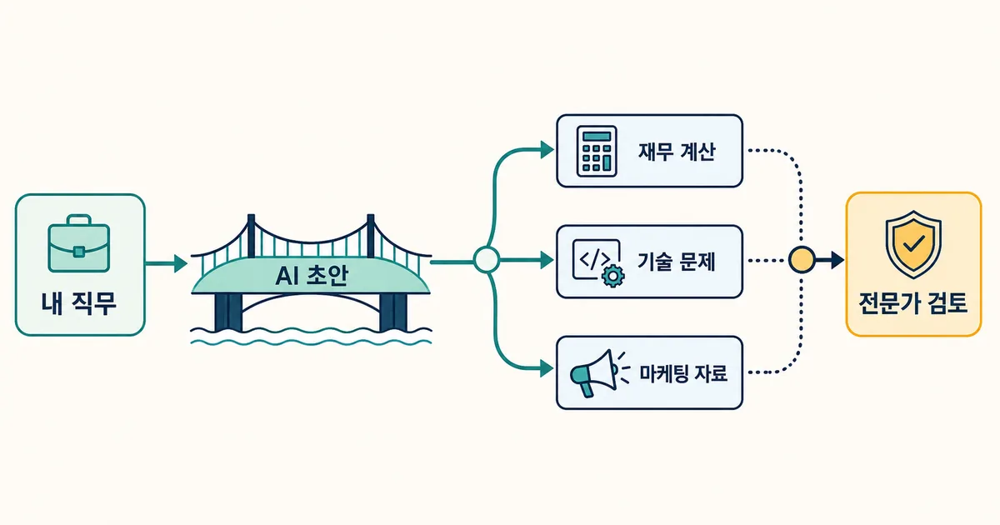
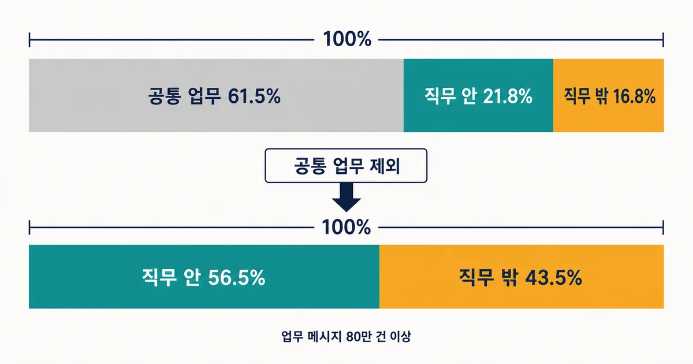
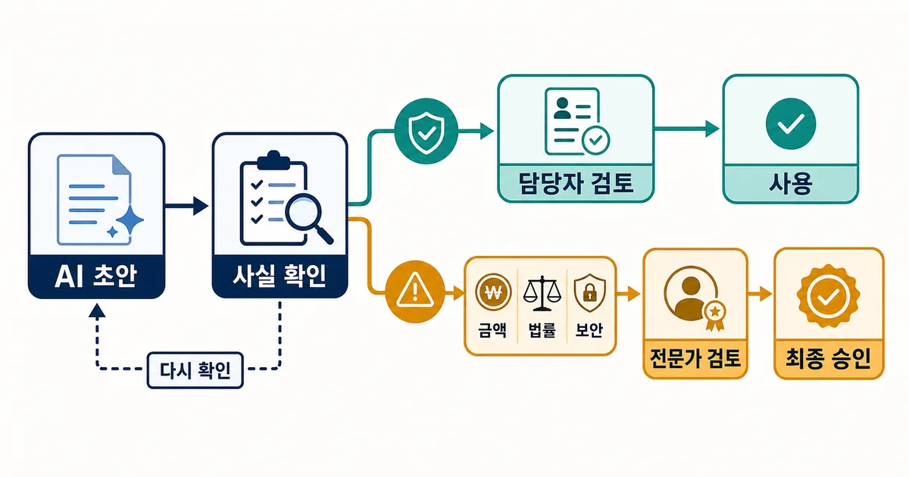

2026. 7. 28 (화) · 약 9분
마케팅 담당자가 간단한 웹 오류를 고치고, 영업 담당자가 고객 데이터를 직접 살펴보며, 작은 회사 대표가 계약서 초안을 검토한다. 예전에는 다른 부서나 외부 전문가에게 넘겼을 법한 일이다. OpenAI가 미국 사용자의 업무 관련 메시지 80만 건 이상을 분석한 결과는 AI가 단순히 기존 일을 빠르게 만드는 데서 그치지 않고, 누가 어떤 일을 맡는지까지 흔들고 있음을 보여준다. 다만 이 수치를 곧바로 생산성 향상이나 일자리 감소로 읽으면 연구가 확인하지 않은 결론까지 건너뛰게 된다.

오늘의 핵심뉴스
심층 분석 · OpenAI Economic Research · 2026. 7. 27
OpenAI 연구: 업무 메시지의 직무 간 이동이 역할 분담을 바꾸고 있다
OpenAI는 미국 ChatGPT 사용자의 업무 관련 메시지 80만 건 이상을 O*NET 직무 활동과 비교했다. 전체 메시지의 16.8%, 공통 업무를 제외한 직무 특정 메시지의 43.5%가 사용자의 기존 직무 밖 업무와 가까웠다. 보고서는 이를 일자리 증감이 아니라 업무 분담이 먼저 바뀌는 초기 신호로 해석한다.
43.5%가 뜻하는 것: 전체 업무의 절반이 아니다
OpenAI 연구는 미국 사용자의 업무 관련 메시지 80만 건 이상을 세 범주로 나눴다. 이메일 작성이나 일정 잡기처럼 여러 직무가 공통으로 하는 일은 ‘공통 업무’, 사용자의 직무와 가까운 활동은 ‘직무 안’, 다른 직무의 전통적 활동과 가까운 것은 ‘직무 밖’으로 분류했다. 전체 기준으로는 공통 업무가 61.5%, 직무 안이 21.8%, 직무 밖이 16.8%였다. 자주 인용되는 43.5%는 공통 업무를 제외하고 직무와 연결되는 메시지만 다시 100으로 놓았을 때 직무 밖 업무가 차지하는 비율이다.
| 기준 | 직무 밖 비율 | 읽는 방법 |
|---|---|---|
| 업무 메시지 전체 | 16.8% | 공통 업무까지 포함한 실제 표본 구성 |
| 직무 특정 메시지만 | 43.5% | 공통 업무를 빼고 직무 안·밖만 비교 |
| 관찰 단위 | 메시지 1건 | 근무 시간·완료 프로젝트·성과가 아님 |

업무가 이동하는 방식: 인계 전에 먼저 시도한다
연구가 말하는 ‘직무 간 이동’은 한 사람이 다른 전문가의 직업 전체를 대신한다는 뜻이 아니다. 영업 담당자가 고객 데이터의 기본 패턴을 살펴보고, 마케터가 웹사이트 오류의 원인을 좁히며, 작은 회사 대표가 재무 계산이나 계약 조항의 첫 검토를 해 보는 식이다. 예전에는 요청서를 만들고 다른 부서의 시간을 기다린 뒤 결과를 받았던 업무가, AI 초안을 통해 현업 담당자의 첫 시도로 바뀐다.
특히 재무 계산과 컴퓨터 문제 해결은 연구에 포함된 비재무·비엔지니어링 직군 일곱 그룹 모두에서 자주 나타난 외부 업무였다. 마케팅 자료 작성도 다섯 그룹에서 반복됐다. 이는 AI가 전문성을 즉시 이전했다기보다, 문제를 발견한 사람이 설명·계산·초안의 진입 비용을 낮춰 다른 분야의 일을 시작하게 했다는 해석에 가깝다.
작은 조직에서 경계 이동이 더 눈에 띈 이유
메시지 사용량이 중간 50%에 속한 일반 사용자만 보면, 2~5석 규모 워크스페이스의 직무 밖 메시지 비율은 18.9%, 101석 이상은 16.3%였다. 작은 조직에는 법무·데이터·개발·마케팅 전문가가 모두 상주하기 어렵다. 따라서 AI가 전문 부서의 대체재라기보다, 바로 물어볼 동료가 없을 때 첫 단계를 시작하게 해 주는 도구로 쓰였을 가능성이 있다. 다만 워크스페이스 좌석 수는 회사 전체 인원과 같지 않고, 업종이나 조직 성숙도 같은 다른 요인도 섞여 있으므로 규모가 원인이라고 단정할 수는 없다.
| 상황 | 기존 흐름 | AI를 쓴 흐름 |
|---|---|---|
| 고객 데이터 질문 | 영업이 분석팀에 요청 | 영업이 초벌 분석 후 이상값을 분석팀에 확인 |
| 웹 오류 | 마케팅이 개발팀에 현상만 전달 | 재현 조건과 로그를 모아 개발팀에 전달 |
| 계약 조항 | 처음부터 법무에 전체 검토 요청 | 쟁점 목록을 만든 뒤 법무가 위험 조항을 판단 |

내 업무에 적용할 때: 초안과 판단을 분리한다
직무 밖 업무를 안전하게 가져오는 핵심은 ‘할 수 있다’와 ‘결정할 수 있다’를 나누는 것이다. 마케터가 오류 재현 절차를 만들 수는 있지만 운영 서버를 바로 수정해서는 안 된다. 영업 담당자가 매출 표를 계산할 수는 있지만 회계 처리 기준을 확정해서는 안 된다. 계약서에서 불리해 보이는 문장을 찾을 수는 있지만 법적 효력을 단정해서는 안 된다. AI는 초안, 질문 목록, 확인 절차를 만드는 데 두고, 오류 비용이 커지는 지점부터 해당 분야 담당자에게 넘기는 편이 낫다.
- 결과가 틀려도 쉽게 되돌릴 수 있는 초안·분류·질문 만들기부터 맡긴다.
- 금액, 법률, 보안, 개인정보, 인사 판단은 근거 자료와 전문가 검토자를 미리 지정한다.
- AI 답변만 전달하지 말고 입력 자료, 가정, 계산식, 확인하지 못한 부분을 함께 넘긴다.
- 전문가에게 넘기는 기준을 금액·권한·데이터 등 관찰 가능한 조건으로 적는다.
- 최종 승인자는 AI가 아니라 실제 업무 책임자라는 원칙을 유지한다.
연구가 말하지 않은 것: 생산성과 고용은 측정하지 않았다
이 연구의 단위는 메시지 한 건이다. AI 답변이 실제 업무에 사용됐는지, 품질이 전문가 수준이었는지, 시간을 얼마나 줄였는지, 사용자가 AI 없이도 같은 일을 할 수 있었는지는 관찰하지 않았다. 표본도 미국 전체 노동자를 대표하지 않는다. 사용자가 ChatGPT Business 가입 때 적은 역할 정보를 개인 계정의 업무 메시지와 연결했고, 여덟 직군만 분석했다. 따라서 43.5%를 ‘일자리의 절반이 대체된다’거나 ‘생산성이 그만큼 올랐다’고 바꾸어 말할 근거는 없다.
독립 보도인 Axios도 같은 한계를 짚었다. 관찰된 요청이 원래 없던 새 업무인지, 이미 맡고 있던 일을 AI로 처리한 것인지 구분하지 못하며, 채용 결정이나 결과 품질도 측정하지 않았다. 한편 Google의 별도 ATLAS 연구에서는 전형적인 직무에서 AI가 쓰이는 업무가 약 21%였고, 업무 상호작용의 완전 자동화는 10% 미만이었다. 표본과 제품이 달라 숫자를 직접 비교할 수는 없지만, 두 연구 모두 현재의 AI 사용을 직업 전체의 자동화보다 일부 업무의 보조와 재배치로 보는 편이 안전하다는 점을 보여준다.
팀에서 바로 점검할 세 가지 경계
| 경계 | 확인 질문 | 안전한 처리 |
|---|---|---|
| 되돌리기 | 틀린 결과를 취소하거나 다시 만들 수 있는가 | 초안과 내부 검토까지만 자동화 |
| 전문성 | 면허·규정·도메인 판단이 필요한가 | 전문가 승인 전 외부 사용 금지 |
| 책임 | 금액·권한·개인정보에 영향을 주는가 | 담당자와 승인 기록을 남김 |
AI가 직무 경계를 넓힌다는 변화는 ‘모두가 모든 일을 한다’는 구호가 아니다. 현업 담당자가 문제를 더 구체적으로 만들고, 전문가는 반복적인 첫 설명보다 고위험 판단과 검토에 집중하도록 인계선을 다시 설계하는 일에 가깝다. 업무 하나를 골라 초안, 사실 확인, 전문가 판단, 최종 승인 네 단계로 나눠 보면 AI가 넓혀도 되는 경계와 지켜야 할 경계가 함께 보인다.
참고한 자료
이번 연구가 보여준 것은 AI가 전문가를 없앴다는 결과가 아니라, 업무가 전문가에게 넘어가기 전 단계가 달라지고 있다는 신호다. 작은 계산과 초안, 문제 진단은 현업 담당자가 먼저 시도할 수 있게 됐지만, 결과의 품질과 책임까지 자동으로 따라오지는 않는다. 조직은 AI 사용량보다 어떤 업무를 누가 시작하고, 어느 지점에서 전문가가 검토하며, 최종 책임을 누가 지는지부터 다시 그려야 한다. 이번 주 업무 하나를 골라 AI가 초안을 맡아도 되는 부분, 전문가 검토가 필요한 부분, 사람이 최종 승인할 부분을 세 칸으로 나눠 적어 보자.